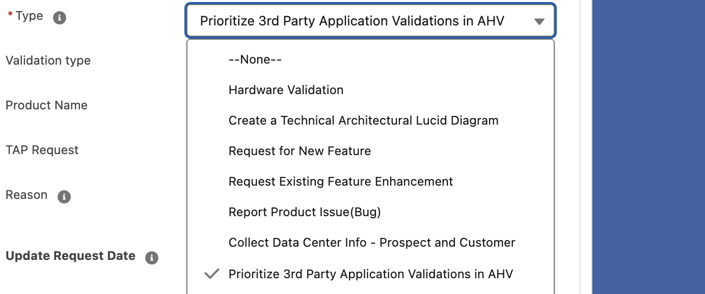
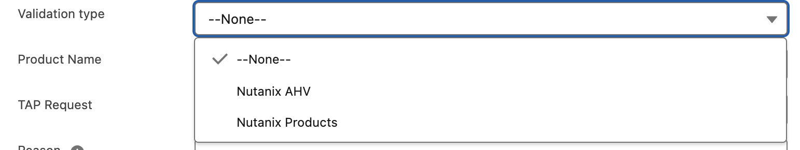
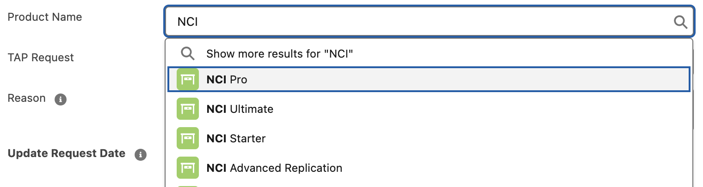

Perform customer/prospects existing hardware compatibility check on AHV. We also recommend component replacement of the existing HW to meet the AHV compatibility.
Supported Manufacturers:
- HPE, Lenovo, Cisco, Dell, Hitachi
Mandatory Information Required:
Note: Mandatory Information required while submitting a ticket for HW BOM validation, without these the validation will not be valid.
- Chassis, CPU, Memory, Storage controller, Storage (HDD, SSD, or a combination of both), Boot drive, Network
SEs are requested to submit a BOM (Bill of Materials)/Hardware details (full hardware configurations) for complete hardware validation in the below format. It is recommended to include the following details: Part number/SKU, Description, Quantity.
If there is a need to open a SWOQUAL project (software qualification) in Jira, then the SE Support team will create the ticket and involve the PM, also will keep the system engineer updated.
Creation of Technical Architectural (Lucid Chart) Diagrams of multiple use cases, SE Support team follow the Nutanix Architecture Diagram Guidelines defined by the Technical Marketing Engineering team. SEs can now reach out to SE Support Team for help with any of the below use case scenarios by submitting a SE Support Ticket.
Use Case Example 1: Current vs Future State
Want to show what a customer/prospect setup looks like now and what it could look like with Nutanix? The SE Support Team can help merge two diagrams into one. For example, it will showcase the customer/prospect's existing infrastructure vs. Nutanix Solutions' offering. The diagram below represents the current state, based on the Nutanix Collector output shared by the SE, and the future state for Phase 1 and Phase 2, derived from the solution summary provided by the SE. The SE Support Team has consolidated these into a single Lucid chart diagram, created in line with global Nutanix standards:
Use Case Example 2: Creating Diagrams from Existing Infrastructure Data
New Diagrams Created for Nutanix Customers Using Existing Infrastructure Information from the insights Portal by Using Collector tool. The SE Support Team can leverage the existing install base data from The Portal and create new architectural diagrams. SEs can leverage these new diagrams for upsell/tech refresh opportunity discussions with customers.
Important Note: SE Support team will replicate the existing infrastructure exactly how it is currently shown in the portal install base, if System engineer wants us to add the new solution proposal into the same diagram then the requirement is the new proposal Sizing solution to be shared with us. Any final diagram shared by the SE Support team must be vetted by the system engineer for accuracy before sharing it with the customer.
Use Case Example 3: Xcceleration Blueprint - Xpress Documentation (for non tech audience)
Visualize what's currently running in the customer's infrastructure across different sites. It is often used by SEs to drive strategic discussions with key stakeholders-including non-technical teams and C-level executives. With the use of intuitive icons, the blueprint makes it easier for the audience to quickly grasp the architecture and align on next steps.
Use Case Example 4: Whiteboard Photos to Lucid Chart Diagrams
Convert Whiteboard Pictures Taken at Customer Site into Lucid Chart Diagrams. Before you leave a customer or prospect meeting, take a picture of the whiteboard. Suppose SEs take a picture of the prospect/customer's existing infrastructure design created on the whiteboard during the customer meeting. In that case, they can share the photo as an attachment when submitting a SE Support Ticket.
Important Note: Only High Resolution and Clear Pictures to be shared to ensure quick action and avoid delays.

Use Case Example 5: Creating Rack Elevation Diagrams from Sizer / Collector / Portal Data
Rack Elevation Diagrams Created for Nutanix Customers Using Infrastructure Data from Sizer, Collector, or Portal. The SE Support Team can take infrastructure details exported from Sizer, Collector, or the Portal and convert them into Rack Elevation Diagrams. The team will use accurate server icons to ensure correct representation. These diagrams can be used in customer discussions and proposals.
Important Note: SE Support Team will replicate the rack layout exactly as per the data shared from Sizer/Collector/Portal. Any final diagram created must be reviewed and approved by the System Engineer before sharing with the customer.
Proactively, the SE Support Team, working with SE Management based on Region, will run SFDC reports identifying Prospects and existing Customer Opportunities meeting the following criteria: Stage 1 & 2 Opportunities and ACV value >= USD 50K. In cases where we find existing customer Opportunities, the SE Support Team will work closely with the Account SE to identify the customer contact to collect infrastructure data. For prospects leveraging Nutanix Partners, the SE Support Team will work with the partner to run the Collector tool, fetching and sharing the existing infrastructure data with the Account SEs. This infrastructure data will also feed into the SFDC Account object for future reference.
Prospect Data Collection
The SE Support Team will take the following steps to work with partners to gather the necessary prospect data:
- Identify Target Opportunities (List approved by SE Management).
- Reach out to the Nutanix partners to help with the Prospect datacenter info collection by utilizing the Collector Tool.
- Share the collected data with system engineers using the SE Support ticketing system for communication and save it in SFDC for future reference.
Using Nutanix Collector: How it Works
Nutanix Collector gathers cluster statistics, including usage data of allocated resources from AHV, ESXi, Hyper-V, Windows-based MS SQL Servers, and NetApp ONTAP CIFS shares. The latest version also supports for gathering both configuration and utilization data from native Azure and AWS environments. The tool gathers data from different types of environments. Supported on-prem are - Prism, vCenter, Hyper-V, etc. It has expanded support to public cloud collection with AWS and Azure, limited to Windows CLI variants because the CLI tools provided by cloud providers are the most efficient way to interact with their APIs for such complex environments. Nutanix Collector operates in a non-invasive manner using read-only permissions through APIs and PowerShell scripts. The data amassed by the Nutanix Collector can subsequently be exported to Nutanix Sizer for precise planning and recommendations.
1. Download the supported desktop variant of the collector application using this Nutanix Portal Link. (This portal link works for Prospects with no Portal access) The Mac variant sometimes may ask for additional permissions to enable the app. Go to System Settings > Privacy & Security > Under Security "Allow applications downloaded From."
2. Run the installed Collector Icon. Click here for the Demo Video.
3. Click on Connect to see the complete datacenter information. Note, this may take time. (i.e. based on the datacenter size)
4. Select your datacenters/clusters and click Collect. You can then save the output in "XLS format" (which has an option to mask sensitive information) or as a "Zip file" which is compatible with the Sizer tool.
Note: This service is currently in a soft launch phase.
The SE Support Team works closely with System Engineers and the Tech Alliances/Nutanix Ready Teams to Identify, Collect, and Boost (Prioritize) third-party application validations if they are not already part of the Nutanix Compatibility and Software Interoperability document. Global Alliances, PM and SREs can also contact the SE Support Team through the SE Support Ticket process to prioritize these application validation requests.
Important Note: SEs are supposed to leverage the Compatibility and Interoperability Matrix to search if the ISV app is already part of this list; only if you do not find it then please go ahead and follow the below instructions.
Process Workflow
- From the Customer/Prospect SFDC Account, click on Cases. Select SE Support as the record type and click Next to proceed.
- Tag the valid associated open opportunity to this case, this helps with the prioritization.
- Select "Prioritize 3rd Party Application Validations in AHV" from the drop-down list.

- Select Validation Type (AHV or Nutanix Product). If selecting Nutanix Product, specify the name.

- TAP Request (Mandatory) - Click on "New Partnership Request".

- Fill the TAP request form completely, this will help Alliances team initiate the validation.

- Add a justification note under "Reason" field (mandatory info).
- The SE Support team will run this in 3 sprints in consecutively every 3 months, i.e. 1st sprint will run in Month one, 2nd sprint runs in month 2 and 3rd sprint will be the month 3.
- Sprint 1 : All the submitted requests will be first validated if it's already part of the compatibility list pipeline, if not then we will add these into the Helper dashboard which will allow global SEs to boost and prioritize by tagging their valid open sales opportunities which are stuck due to non-compatibility.
- Sprint 2 : SE Support team will collect the boosted data along with their associated ACV value and share with the theater leaders to get the approved top 5 ISV application validations i.e. 5 applications from each theater totaling 15 ISV applications globally.
- Technology Alliances Role : Once this process is live, Tech alliance team will completely stop taking the requests via the regular google doc. The SE Support team will share the top 15 priority list which are approved directly from the theater leaders with the alliance team to begin the app validation process.
- Sprint 3 : Tech alliance team will complete the NDA counter signing with these top 15 ISVs and begin validation in the 2nd month which will need to be completed in the final 30 days of this sprint. Post validation completion, alliances team to add the compatible application list into the portal documentation and confirm to SE support team who will confirm back to the field SEs.
Prioritization Criteria
Prioritization from the SE Management will be done post boosting phase, also the below criteria's will be considered:
- Number of Opportunities tied to this Validation
- Customer type Global 2K Account, High Volume, Total Bookings
- Partner - ISV
Note: This service is currently in a soft launch phase.
SE Support team are going to assist customer success sales team on post sales demo of the products NCI and NCM both high level or detailed based on the request, also complete portal run through along with how to manage their licenses. The team gets involved only when an account SE or CSR raises an SE Support case or reaches out via email. Once the task has been completed, the SE Support team will share the detailed meeting notes in the form of a presentation with the account SE and CS Sales which will include all the points we discussed with the customer.
a) Nutanix Support Portal Walk-through
- Overview of Nutanix Support Portal
- Dashboard (Discoveries, Diagnostics, etc.)
- Health
- Assets
- Documentation
- Downloads
- Licensing
- Support Contracts
- And more
b) Technical Deep Dive with Customers (Prism Central)
NCI Demo (Prism Central Walkthrough)
- Customizable Dashboard
- Core Management (Basics + UI): Global Search, Alerts Widget, Task Summary, Life Cycle Manager (LCM), etc.
- Storage: Storage Containers, Volume Groups, Storage Policies
- Network & Security: Subnets, VPCs, Security Policies, etc.
- Data Protection: Protection Policies, Recovery Plans, Availability Zones, etc.
- Infrastructure & Monitoring: Clusters, Hosts, Disks, Alerts, Events, etc.
NCM Demo
- Intelligent Operations: Analysis, Discovery, Planning, Playbook, Reports
- Self-Service & Automation: Applications, Marketplace, Blueprints, Runbooks, etc.
- Cost Governance
- Security & Compliance
Note: This service is currently in a soft launch phase.
SEs can now submit a SE Support case to propose product new feature enhancements. This will be prioritized based on the associated opportunity ACV value and then shared with the respective PMs to expedite the feature enhancement in Nutanix portfolio products.
Important fields which are necessary to be filled on the SE Support case object:
- Opportunity: Tag the associated sales opportunity to the case.
- Product Name: Add the product for which you are requesting the enhancement.
- Reason: Please mention the request type from this list - "New Feature", "Enhancement to Existing Feature", or "Competitive gaps and integrations with Third-Party". And also add complete justification as to why we need this feature enhancement into the product you have selected.
- Update Request Date: Select the date by when you need the feature enhancement addition to be completed.
- Jira Case#: Add the Jira ticket ID which you may have already created (not mandatory).
- Description: Add detailed information regarding the feature addition you are proposing, this is important for us to review and understand the ask.
How prioritization happens:
- A) SE Management including SEMs and SEDs review's each enhancement request made by reviewing the case description and reason field.
- B) Opportunity ACV value is important, so please tag the correct opportunity which is associated with this request.
- C) SE Management will work with PM team to prioritize the top feature enhancements received based on the customer and opportunity value.
Know about the different case status while its being worked upon:
- Waiting on SE - If an additional information has been asked to the requestor (SE) and its waiting for an update.
- SE Management Review - When SE management (SEM and SEDs) review and prioritize.
- Committed and On Roadmap - Post SE Management Review and prioritization, this is currently with the PM team and in development phase.